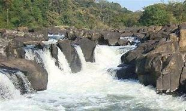
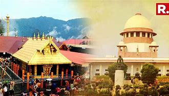

Pathanamthitta District is a district in the southern part of Kerala, India. The district headquarters is in the town of Pathanamthitta. There are four municipalities in Pathanamthitta: Tiruvalla, Adoor, Pathanamthitta and Pandalam.Pathanamthitta District, the thirteenth revenue district of the State of Kerala, nestles its head on the slopes of the Western Ghats and stretches to the low-lying rice fields bordering Alappuzha District. It was formed with effect from the 1st November, 1982
Tourist attraction in pathanamthitta!
Gavi
. Gavi is an Eco-Tourism a project of the Kerala Forest Development Corporation located in Pathanamthitta district, Kerala. Gavi, located in Pathanamthitta district offers its visitors activities like trekking, wildlife watching, outdoor camping in specially built tents, and night safaris. Distance from Pathanamthitta To Gavi is 109 km 428 mtrs & Travel Time is 2 hour 5 mins By Road. Gavi is 14 km south west of Vandiperiyar, 28 km from Kumily, near Thekkady. Gavi is inside the Ranni reserve forest. Gavi is a part of Seethathode Panchayath in Ranni Taluk. Gavi is part of the Periyar Tiger Reserve, and the route can be covered by car from Vandiperiyar. The entrance fee is 25 rupees per person and 50 rupees per vehicle. Cameras
Konni Reserve Forest
Konni Reserve Forest (RF), in Karunagappally and Pathanapuram talukas of Kollam district and portions of Kozhencherry and Adoor talukas of Pathanamthitta district lies on the western slopes of the Western Ghats. Therefore, it receives heavy rainfall, resulting in Tropical Evergreen and Semi-evergreen forests. Three major rivers and many rivulets originate in Konni RF. The Forest area of the Division has a hilly terrain, the main hills being Chelikkalkar (997 m), Kodamala (598 m), Thunathumala (721 m) and Iruvallimala (817 m). The numerous ridges and valleys do not have a definite pattern, but on the whole, the area has a north to south aspect. The climate in the hills is more pleasant than that of the plains.
Perunthenaruvi Waterfalls

Perunthenaruvi Waterfalls are waterfalls 36 km from Pathanamthitta in Pathanamthitta District, Central Travancore region, Kerala State, India. It is a popular tourist destination situated in Vechoochira Panchayat of Ranni taluk. The one shore of this waterfall is Kudamurutty and Vechoochira is the other. The main route to this waterfall starts from Ranni - Athikkayam - Kudamurutty - Perunthenaruvi. It is a fine place to spend time with family in a very serene atmosphere.
The Sabarimala Temple

The Sabarimala Temple (Malayalam pronunciation: [ʃabəɾimala]; Malayalam: ശബരിമല ക്ഷേത്രം) is a temple complex located at Sabarimala hill inside the Periyar Tiger Reserve in the Perinad Village, Pathanamthitta district, Kerala, India.It is one of the largest annual pilgrimage sites in the world with an estimate of over 40 to 50 million devotees visiting every year. The temple is dedicated to a Hindu Brahmachari (Celibate) deity Ayyappan also known as Dharma Shasta, who according to belief is the son of Shiva and Mohini, the feminine incarnation of Vishnu. The traditions of Sabarimala are a confluence of Shaivism, Vaishnavism, and other Śramaṇa traditions.
Thriveni Sanganam
Situated on the way to Sabarimala, the Thriveni Sanganam as the name suggests is the point where the Holy Pamba River meets with the Manimala River in its north and with the Achankovil River in the south. The devotees stop here to take a dip in the holy water to wash away their sins. Millions of visitors also come here to enjoy the beautiful landscape of the place. The Pamba River, also known as the Dakshina Ganga or the Ganges of South India, is the third longest river in the southern part of the country which begins flowing from the Western Ghats. Devotees believe that it was near this holy river that King Rajasekara gained a vision of Lord Ayappa.